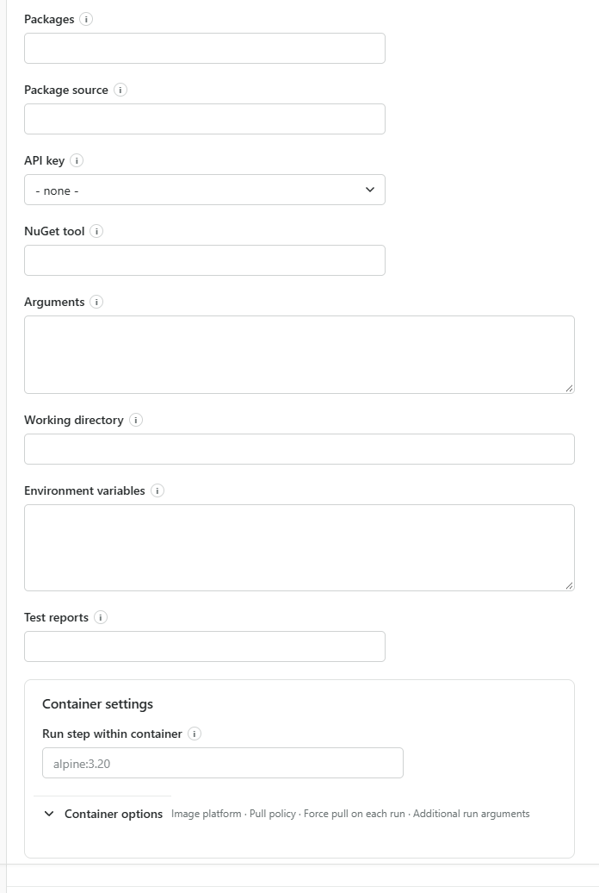

NuGet Publish
Pushes packages to a NuGet feed with nuget push. The API key comes from a Secret text credential and is masked in the log.
When to use it
Use it after NuGet Pack to put your package on the studio feed.
How to set it up
- Open the build configuration and click Settings › Build Steps.
- Click Add build step. Type
NuGet Publishin Filter step types if you like, then click the NuGet Publish tile (group Packages). - Type a Step name, for example
Publish framework. - Fill in the fields described below.
- Optional: set Execute step, Conditions and Retry on failure. See The steps list and the step editor.
- Click Save.

Every field
| Field | What it does | Default | Example |
|---|---|---|---|
| Packages | The package to push, or a pattern such as out/*.nupkg, relative to the working directory. | Empty (required) | out/*.nupkg |
| Package source | Passed as -Source, a feed URL. Empty uses the default source of nuget. | Empty | https://nuget.studio.example/v3/index.json |
| API key | A Secret text credential that holds the API key. It is read when the step runs, passed to nuget as one argument and masked in the log. It is never stored in the build configuration. Other processes on the agent can still see the argument while nuget runs. | None | The credential nuget-feed-key |
| NuGet tool | Path of nuget.exe. Empty takes nuget from the PATH. | Empty | C:\tools\nuget.exe |
| Arguments | One argument per line, such as -SkipDuplicate. Do not put a key here: use the API key field. | Empty | -SkipDuplicate |
| Working directory, Environment variables, Test reports, Run step within container | The same in every runner. See Fields every runner has. |
A worked example
Push the package that the earlier step made. Step name Publish framework, Packages out/*.nupkg, Package source the studio feed, API key the credential nuget-feed-key, Arguments -SkipDuplicate.
What you see when it runs
The console shows $ nuget push out/Framework.1.4.57.nupkg -Source … -ApiKey ********. The key is masked.
Problems and fixes
| Problem | What to do |
|---|---|
| The API key credential … was not found, is not Secret text, or this build may not use it | Create a Secret text credential and check that this project may use it. See Secrets. |
| The NuGet Publish step has no packages to push | Fill in Packages. |
| A 409 Conflict from the feed | The version exists already. Add -SkipDuplicate or raise the version. |